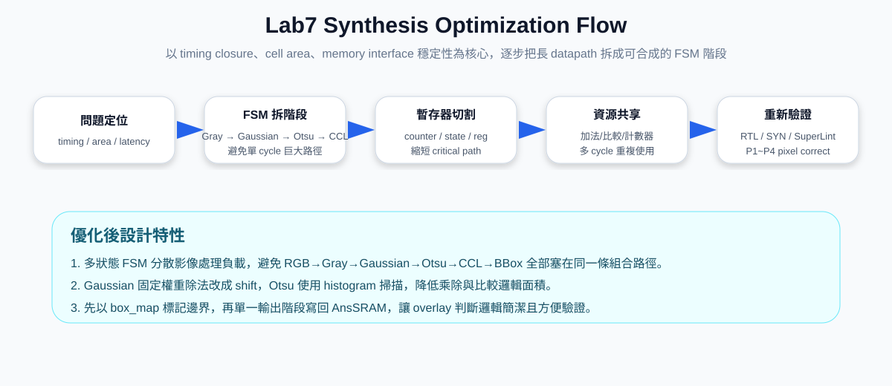
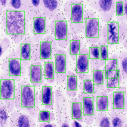

八、Synthesis 遇到問題時的設計最佳化說明
本題說明當設計在 synthesis 階段遇到 timing violation、cell area 過大、memory datapath 過長或 critical path 太深時，如何透過 FSM 拆階段、暫存器切割、資源共享、固定係數化簡與記憶體控制優化，使設計同時維持正確輸出與可合成性。
一、題目要求與本設計回答重點
題目要求說明在 synthesis 過程中遇到問題時，如何最佳化設計。例如在兩個 instance 或兩段功能之間插入 register 以縮短 datapath，或利用 resource sharing 減少 cell area。本設計的 Lab7 影像流程包含 RGB 讀取、灰階轉換、Gaussian filter、Otsu threshold、mask polarity correction、8-connected CCL、Bounding Box extraction 與 final overlay。如果把全部運算放在同一個 cycle 或同一段組合邏輯中，critical path 會非常長，synthesis 容易產生 negative slack。因此本設計採用「多階段 FSM + 暫存器化中間結果 + 資源共享」的架構。
二、最佳化整體圖解

三、正確數學式與硬體最佳化關係
1、RGB to Grayscale：固定係數乘法與 ties-to-even rounding
Lab7 灰階公式為加權 RGB 轉換。硬體不直接使用浮點數，而是用整數係數近似，將除以 256 轉成右移 8 bits，降低除法器面積。
這樣的好處是：乘法係數固定、除法可用 shift 完成，且 rounding 行為符合 round-to-nearest, ties-to-even，不會因簡化而造成 pixel mismatch。
2、Gaussian Filter：固定 kernel 與 shift 除法
Gaussian kernel 的總權重為 16，因此硬體中不需要真正的除法器，只需要右移 4 bits。權重 2 與 4 也能分別用左移 1 bit、左移 2 bits 表示，減少乘法器。
3、Otsu Threshold：使用 histogram 降低重複運算
硬體實作時不需要對每個 threshold 重新掃描 65536 個 pixel，而是先建立 256-bin histogram，再用累積方式掃描 threshold。這可以大幅減少 synthesis 面積與運算時間。
4、PA Rank 指標相關式
其中 P 是 post-simulation time，A 是 total cell area。設計最佳化的目標不是只追求快，也要避免面積暴增，因此本設計採用多 cycle 資源共享，而不是大量平行複製硬體。
四、Python / Lab7.ipynb 對應的最佳化思路
Python notebook 通常用來驗證演算法正確性，但 Python 可以大量使用陣列、函式庫與巢狀迴圈；RTL synthesis 則必須考慮 register、clock cycle、critical path 與 cell area。因此本設計先用 Python 確認演算法，再轉成硬體友善的 FSM。
# Python reference concept：演算法驗證用
# 1. RGB image -> grayscale
# 2. Gaussian filter with reflect101 boundary
# 3. Build histogram and run Otsu threshold
# 4. Generate binary mask with auto polarity
# 5. Run connected component labeling
# 6. Compute bounding boxes and overlay green box
# 在 Python 中，這些步驟可以用陣列一次完成；
# 但在 Verilog 中，必須拆成多個 state，逐 pixel 或逐 label 執行，
# 以避免 synthesis 時出現過長 combinational datapath。換句話說，Python 是 golden model，Verilog 是硬體化版本。最佳化的關鍵不是改變演算法，而是改變硬體排程：把同一個演算法拆成多個 clock cycle 完成。
五、Verilog 設計最佳化重點
1、用 FSM 拆開長 datapath
本設計將整個影像處理流程拆成多個 state，包括 S_LOAD、S_GRAY、S_HIST_CLEAR、S_GAUSS_HIST、S_OTSU_INIT、S_OTSU_SCAN、S_COUNT_HI、S_POLARITY、S_MASK_WRITE、S_PARENT_INIT、S_CCL_SCAN、S_BBOX_INIT、S_BBOX_SCAN、S_BOXMAP_CLEAR、S_BOXMAP_GEN、S_DRAW_WRITE、S_DONE。這樣每個 clock 只處理一小段邏輯，critical path 明顯縮短。
localparam [5:0]
S_LOAD = 6'd1,
S_GRAY = 6'd2,
S_GAUSS_HIST = 6'd4,
S_OTSU_SCAN = 6'd6,
S_CCL_SCAN = 6'd11,
S_BBOX_SCAN = 6'd13,
S_DRAW_WRITE = 6'd16;2、在中間結果之間加入 register / memory buffer
如果 RGB、Gray、Gaussian、Mask、Label、Box map 全部以組合邏輯直通，路徑會非常長。本設計將中間結果存入暫存陣列或記憶體式 buffer，例如 rgb_mem、gray_mem、gauss_mem、mask_mem、label_mem、box_map。這相當於在各處理階段之間插入 register boundary。
reg [31:0] rgb_mem [0:NPIX-1];
reg [7:0] gray_mem [0:NPIX-1];
reg [7:0] gauss_mem [0:NPIX-1];
reg mask_mem [0:NPIX-1];
reg [11:0] label_mem [0:NPIX-1];
reg box_map [0:NPIX-1];3、固定係數運算改成 shift / add
Gaussian 的除以 16 使用 >> 4，灰階的除以 256 使用 >> 8。這種做法比使用一般除法器更容易通過 synthesis，也能降低 cell area。
// grayscale: divide by 256
q = s >> 8;
rem = s & 8'hFF;
// gaussian: divide by 16
q = s >> 4;
rem = s & 4'hF;4、Otsu 使用 histogram 掃描，不重複掃整張圖
Otsu threshold 若每個 T 都重新掃描 65536 pixel，硬體代價會非常高。本設計先在 Gaussian 階段建立 histogram，之後只掃 256 個 gray levels，並用累積 wb_acc、sum_b_acc 逐步更新。
S_GAUSS_HIST: begin
base_i = gaussian_at_reflect(x_i, y_i);
gauss_mem[addr_cnt] <= base_i[7:0];
hist[base_i[7:0]] = hist[base_i[7:0]] + 32'd1;
end
S_OTSU_SCAN: begin
wb_acc <= wb_acc + hist[otsu_idx];
sum_b_acc <= sum_b_acc + otsu_idx * hist[otsu_idx];
end5、CCL 使用 8-connectivity 但只讀已掃描鄰居
8-connected CCL 理論上有 8 個方向，但 row-major scan 時，只需要讀取已經處理過的 W、NW、N、NE 四個鄰居。這樣可避免未來 pixel 造成 combinational dependency，也讓硬體控制更簡單。
n_w = (x_i == 0) ? 12'd0 : label_mem[addr_cnt - 16'd1];
n_nw = ((x_i == 0) || (y_i == 0)) ? 12'd0 : label_mem[addr_cnt - 16'd257];
n_n = (y_i == 0) ? 12'd0 : label_mem[addr_cnt - 16'd256];
n_ne = ((x_i == 255) || (y_i == 0)) ? 12'd0 : label_mem[addr_cnt - 16'd255];6、Bounding Box overlay 先建立 box_map，再統一寫 AnsSRAM
若在輸出時即時計算每個 pixel 是否落在每個 bbox 邊界上，會形成「pixel × bbox」的大型比較網路。最佳化後先用 S_BOXMAP_GEN 依序把 bbox 四條邊標到 box_map，最後 S_DRAW_WRITE 只做一次簡單判斷。
Ans_D <= box_map[addr_cnt] ? GREEN : rgb_mem[addr_cnt];六、問題與最佳化策略對照表
| 遇到的 synthesis 問題 | 原因 | 最佳化方法 | 效果 |
|---|---|---|---|
| Critical path 太長 | 影像處理流程包含多層乘法、加法、比較與 memory selection | 將流程拆成多個 FSM state，讓每個 cycle 只負責一段功能 | 縮短單 cycle datapath，改善 timing slack |
| 除法器面積過大 | 灰階與 Gaussian 若用一般除法會推導出昂貴硬體 | 除以 256 改成右移 8 bits；除以 16 改成右移 4 bits | 降低 cell area，減少 delay |
| Otsu 運算量過大 | 若每個 threshold 都重新掃描全圖，會造成大量重複運算 | 先建立 256-bin histogram，再用累積方式掃描 threshold | 運算從 256×65536 次降低為 65536 + 256 等級 |
| CCL label equivalence 複雜 | 不同 provisional labels 可能代表同一物件 | 使用 union-find parent table 記錄等價關係 | 能支援 8-connected component 合併 |
| Overlay 判斷面積過大 | 若每個 pixel 同時比較所有 bbox，會產生大量比較器 | 先產生 box_map，再逐 pixel 寫回 final image | 輸出階段判斷簡化為 box_map 查表 |
| Memory interface 不穩定 | ROM/SRAM 有 enable、write enable 與 read latency 問題 | 每個 state 預設關閉 memory，只有需要時才拉低 CEN/WEN | 避免錯寫與 address 對不齊 |
七、報告可直接使用的完整回答
在 synthesis 過程中，我主要遇到的問題是 datapath 過長與 cell area 可能過大。由於 Lab7 的 drawBbox 設計包含 RGB to grayscale、Gaussian filter、Otsu threshold、binary mask、8-connected CCL、bounding box extraction 與 final overlay，如果把所有運算都放在同一個 cycle 內，會造成很長的 combinational path，使 setup timing 難以滿足。因此我將整體設計改成多階段 FSM 架構，每一個 state 只負責一個明確任務，例如讀取影像、灰階轉換、Gaussian filter、histogram 建立、Otsu 掃描、mask 產生、CCL 掃描、bbox 計算、box map 產生與最後寫回 AnsSRAM。這種做法等同於在不同功能區塊之間插入 register boundary，可以有效縮短 critical path。
其次，為了減少 cell area，我避免使用不必要的除法器與大量平行硬體。灰階轉換使用固定係數整數化公式，將浮點運算改為 77R + 150G + 29B 後再右移 8 bits；Gaussian filter 的 kernel 總權重為 16，因此除以 16 改用右移 4 bits。權重 2 與 4 也使用 shift 表示，而不是使用一般乘法器。這些固定係數最佳化可以降低邏輯面積並減少 delay。
在 Otsu threshold 的部分，我沒有對每一個 threshold 重新掃描整張影像，而是先建立 256 個 gray-level histogram bins，再以累積方式計算 background count、foreground count 與 between-class variance。這樣可以把大量重複的 pixel-level 計算改成 histogram-level 計算，硬體資源需求較低，也比較容易 synthesis。
在 CCL 與 bounding box 階段，我也採用資源共享與逐步掃描策略。8-connected CCL 在 row-major scan 時，只需要檢查已經掃描過的 W、NW、N、NE 四個鄰居，因此不需要同時建立所有方向的比較邏輯。Label equivalence 使用 union-find parent table 處理，避免複雜的大型合併網路。Bounding box overlay 則先以 box_map 標記需要畫綠框的位置，再於最後輸出階段以簡單的 mux 決定輸出原圖 pixel 或綠色 pixel。這避免在每個輸出 pixel 上同時比較所有 bbox 座標，能明顯降低輸出階段的比較器數量。
最後，我重新執行 simulation 以確認最佳化沒有破壞功能正確性。由 terminal result 可知，Pattern 1 到 Pattern 4 的 RTL simulation 都成功通過，且總錯誤數為 0。因此，本設計的最佳化不只是降低 synthesis 壓力，也保留了 Lab7 要求的 pixel-perfect output。
八、驗證結果與圖片




九、可放入報告的結論
本設計在 synthesis optimization 上採用「切 pipeline、拆 FSM、存中間結果、共享運算資源、固定係數化簡」的策略。透過將長 datapath 拆成多個 clock cycle，設計可以更容易滿足 10 ns clock period 的 timing constraint；透過 shift 取代固定除法、histogram 取代重複掃描、box_map 取代大量 bbox 即時比較，也能有效降低 cell area。最後以 RTL simulation 驗證 P1～P4 全部 PASS，證明最佳化後的硬體架構仍符合 Lab7 的功能與像素正確性要求。